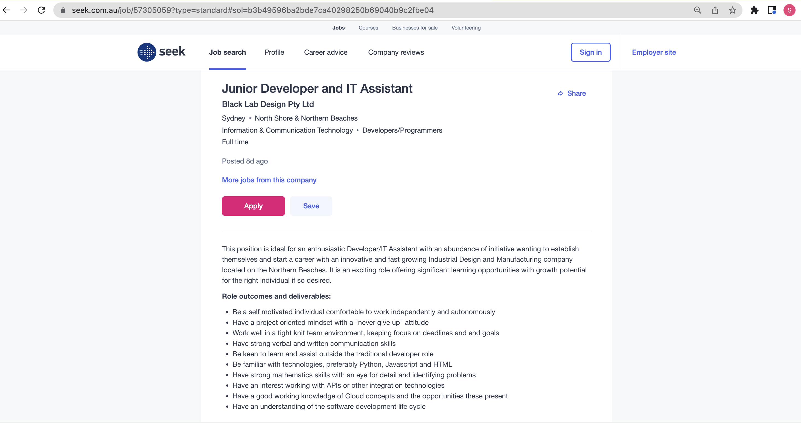
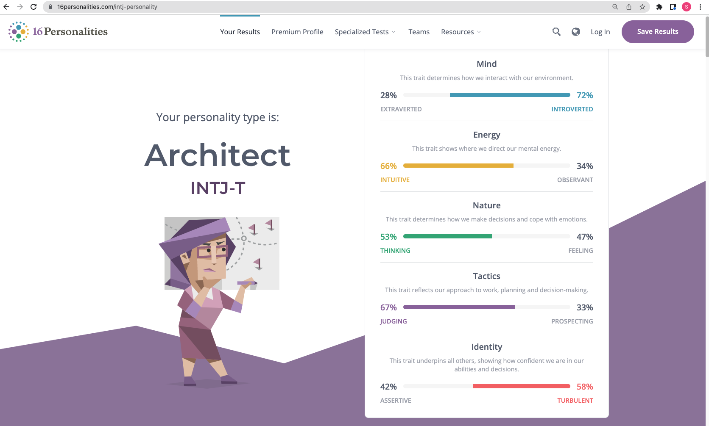
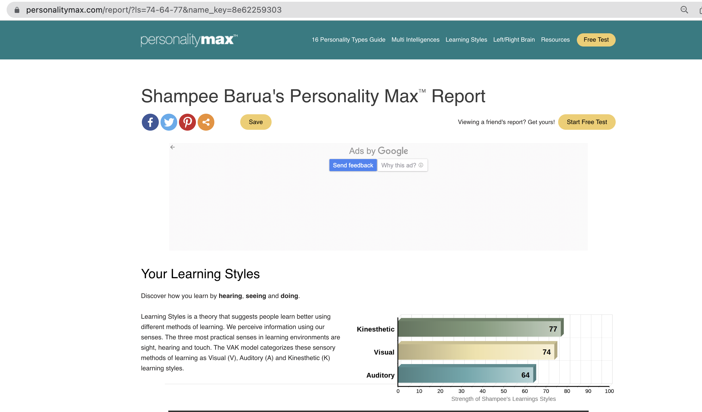
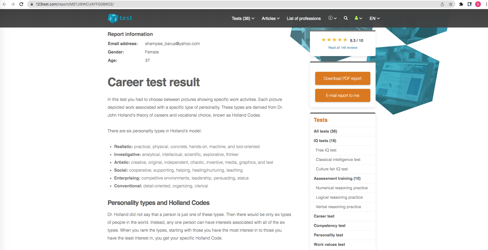
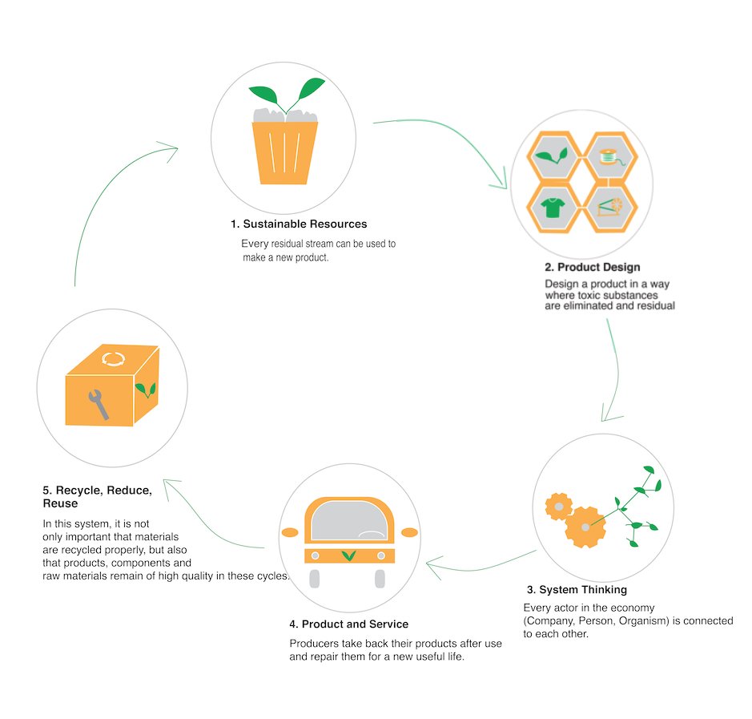

Profile
Personal Information
I am Shampee and my roots are from Bangladesh, a land of rivers, and now living in the Greater
Sydney area of NSW for more than 10 years. From my childhood, I had an interest in technology as well as in the
arts. My favorite hobbies are dancing, graphic arts and watching art films including anime and lots of Korean
Dramas!
At Dhaka University, I studied the Bachelor and the Master of Arts in English Literature to pursue my love for
arts and cultural diversity. At TAFE (technical and further education) Hornsby, I completed a Diploma in Website
Development. While doing the course, I found it quite remarkable and interesting how we were able to employ
creativity in technology with the help of some codes and weird languages.
Interest in IT
After moving to Australia, I was amazed to see the use of technology in every aspect of life unlike
in Bangladesh. At that time, my pastime was watching animated movies and that urged my passion to create
characters done by Studio Ghibli or develop a game or an application for various platforms.
Based on my passion for Arts and Technology, I did a short course in Digital Media at TAFE without having any
experience in the IT sector. At that time, I realized that there was more to explore in this field. Soon after, I
pursued a Diploma in Website Development and completed the course with distinction which led to an increase in my
interest in IT.
Working as a novice developer for a small company, Berry WebDesign, I gained some practical
knowledge but realized I needed to be equipped with more skills in this area, especially the backhand.
For the past few years, I worked as a freelancer but needed to look for pathways to get into the workforce
full-time. At present, I need to develop my skills while at the same time managing the household activities and
the little one. RMIT (Royal Melbourne Institute of Technology) has given me the opportunity by offering an online
platform to complete a program that will equip me with the desired attributes.
I am planning to complete the Bachelor of Information Technology program at RMIT to hone my skills and further
explore the industry as a full-stack Web Developer.
Ideal Job

SEEK. 2022. [online] Available at: [Accessed 18 June
2022].
For full job description Click here
The Job Description is seeking a Junior Developer and IT Assistant for Black Lab Design Pty Ltd in
the North Shore & Northern Beaches as a Full Time.
I am interested in this position as it is ideal for an enthusiastic developer like me to establish and start a
career, especially with a design company. The required skills match my skillset and furthermore, it is an exciting
offer with significant learning opportunities and growth.
This position requires a self-motivated individual to be comfortable working independently and autonomously and
have a project-oriented mindset with a "never give up" attitude while keeping the focus on deadlines and end
goals.
Apart from strong verbal and written communication skills, the role requires strong mathematics skills and an eye
for detail and identifying problems. Knowledge of technologies is preferably Python, Javascript, and HTML and
there is a need to have an interest in working with APIs (application program interfaces) or other integration
technologies. A good working knowledge of cloud concepts and understanding of the software development life cycle
would be a plus in the position.
In the Diploma of Website Development, I learned various programming languages and frameworks including C#,
Visual Basic, MSSQL, HTML (Hyper Text Markup Language), CSS (Cascading Style Sheets), Javascript, JQuery and
ASP.NET.
While working for Berry WebDesign, I learned to use Wordpress.
Though I have some basic skills to apply for this job, I still lack proper knowledge in Python and other project
management and source control tools, like Atlassian, Sourcetree, Bitbucket, Microsoft Team foundation server,
GitHub and Git.
I believe after completing this course I will gain the required knowledge in programming like python and learn to
work in a team environment as well as to further enhance my verbal and communication skills whilst producing the
project deliverables.
Personal Profile
Myers-Briggs test

16personalities.com. 2022. Welcome! | 16Personalities. [online] Available at: [Accessed 18 June 2022].
My personality type is Architect (INTJ-T)
For full result
Click here
Online learning style test

Personality Max. 2022. Shampee's Learning Styles at Personality Max. [online] Available at:
[Accessed 18 June 2022].
In terms of learning style, I am primarily a Kinesthetic learner (36%), followed by a Visual learner (34%) and
then Auditory (30%).
For full result
Click here
Personality test (Holland’s model)

123test.com. 2022. [online] Available at:
[Accessed 18 June 2022].
There are 6 personality types in Holland’s model and my code is CARISE. My most favored personality type is
Conventional followed by Artistic and Realistic. According to the results, a Web Developer role would be a 75%
match with this personality code.
For full result
Click here
Personality tests can have a range of benefits for professional development. It helps to prepare for the job
interview and provides the necessary insights to make the right career choice. In addition, this can assist in
identifying gaps or weaknesses and to seek training courses and programs to be able to operate and function better
as required for the roles or position.
Certain roles allow individuals to express their personality traits more than others. For example, my personality
shows me as an introvert and is suitable for a job like a Web developer.
However, with this role, some teamwork is required and some conversations with clients are necessary. Being a shy
and introverted person, most of the time I do not speak up. I fear I might not be able to explain things properly.
I struggle to solve problems solely by myself without asking for help from others.
With this personality, I can recognize my weaknesses and discover where I need to improve. For example, I can
engage in courses or training programs that can boost my social interaction and teamwork skills. To be better at
meeting task deadlines, I could attend time management courses.
Project Idea

Overview
I want to create a free-of-charge smartphone application that can be used to search for circular economy
products, services, and events around the world. It will work as a platform to promote a zero-waste policy by
reducing, recycling, and reusing products. It will include articles about the circular economy. How and where to
find products to recycle and reuse. Without being aware of food wastage, people throw away food every day — from
uneaten leftovers to spoiled produce. By simply putting the product's name, this app will sort household waste,
helping to reduce the fraction of unsorted waste. It will create cooking recipes by adding the ingredients you
have. To make food waste prevention fun and easy, users need to open the menu page on the app and choose a recipe.
It will help us to use what we have, so nothing goes to waste!
Motivation
After joining an online seminar on the circular economy, I was motivated and determined to reduce waste and help
the earth to go green in every way possible. For a long time, I was thinking of a way to create awareness of
waste, especially food and products, and how to reduce it. Creating an application with some information and
sorting bins and food recipes will give me a chance to contribute to making the earth clean and green. I was
thinking of a way to show the products of all environmental choices, drastically reduce the use of natural
resources and cut or eliminate emissions and waste. Creating an application will increase the awareness of the
people while sitting in their comfort zone!
Description
My app will help the user to understand how a circular economy works, how important it is to save our
environment, and how we can reduce our waste by reusing products and creating new recipes. My app will have a
simple quiz section where users will answer questions about waste and the circular economy and will get some
points. With that extra point, they will be able to swap a product. There will be a reward system where users will
be able to see how green they are. Also, they will get notifications about software updates as well as events and
products of the circular economy.
Mobile application development is a step-by-step process for creating apps for mobile devices, like phones and
tablets. In addition to collecting valuable user data, ramping up marketing activities with push notifications —
personalizing customer approach — and the ability to work offline, mobile apps provide businesses and users with
more functionality than a website, like creating an easy-to-use loyalty program right in the app itself.
My app will feature:
Push notifications
Community wall
Surveys and questionnaires
Video, image, and audio hubs
Calendar integrations
Ecommerce carts
Menu system
Event page
Selecting products and Bins
Bin Quiz
User directory
User Feedback
After building the app, I will develop an MVP—minimum viable product. The app idea behind an MVP is that it will
force me to think about the app’s most essential features. This is an important aspect of the app project on the
path to creating a successful app.
Once my MVP is finished, and I have a working app, then I need to test it before deployment.
The app must be tested on actual mobile platforms. Between iPhones, iPads, Android devices, PWA, smartphones,
tablets, and more. I need to check if the app works online, offline, and so on. Devices with different software
versions or screen sizes might have issues needing to be fixed before it goes live.
Will go through usability testing with actual test users such as friends, family, and colleagues as well.
After manual testing, it is necessary to conduct advanced testing using written scripts to test the app. If there
is an omission in terms of workflow and logic, it is necessary to react in a timely manner and fix the problems.
Tools and Technologies
First, I need to create a wireframe, a rough layout of a mobile app. Anyone can create a wireframe on a piece of
paper, a whiteboard, napkin, or use a digital wireframing tool. The purpose of the wireframe is to simply
illustrate the app’s features and layout the schemes.
Also need to create the overall style of the app, including things like the color scheme, font selection, and
buttons and widgets. Design encompasses both the user interface (UI) and the user experience (UX).
I will use Hybrid App development. Most hybrid builds rely on Javascript, which is a web technology. This coding
language will help to create an app once and deploy it on multiple platforms like iOS and Android. The flexibility
of a hybrid app is still high in terms of what the app can accomplish. While we will not need a developer who
specializes in low-level coding to build it, they still need to have web development skills.
Skills Required
The most important aspect of mobile app development is building a high-quality user interface (UI). The UI of an
application is responsible for interaction between the user and the software. When it comes to developing mobile
applications, it is not enough for them to simply have adequate backend functionality. With a plethora of apps
available to download, the most attractive are the apps that are easy to use, have a superior design, and run
smoothly.
As a developer, I need to have a knowledge of multiple operation platforms in the current industry. As far as
market penetration, there are three major mobile platforms: Android, iPhone, and Windows Phones.
Need to have the skill and knowledge of backend computing like security, database management, hardware
interaction, implementation of memory allocation
Another important skill required is using modern programming languages like C# and Java, HTML 5, and CSS.
Knowledge of mobile platform Application Programming Interfaces (API) such as Apple iOS, Android, and Windows
Mobile. Able to implement the use of cross-platform mobile suites like Antenna and AMP
(Accounting-Management-Promotion).
Outcome
Every year, a third of the food produced worldwide is tossed in the trash. By reusing the foods and ingredients
that we already have at home, we can save our money, and time, and on top of everything food waste! Terrific way
of using technology to conserve the environment in the process.
Many of us need to join forces to live sustainably. Whether that is saving water or energy, recycling waste,
choosing renewable energy, or moving around without generating emissions. Thankfully, technology is travelling in
the same direction - we can now count upon many applications to improve our daily effort in caring for the
environment.